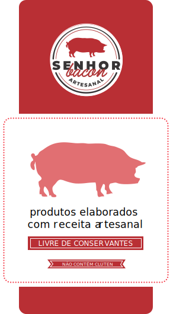

<mat-sidenav-container>
    <app-toolbar (toggleSidenav)="sidenav.toggle()" (toggleDir)="toggleDir()">
    </app-toolbar>
</mat-sidenav-container>
<mat-sidenav-container class="app-sidenav-container">
    <mat-sidenav #sidenav class="app-sidenav mat-elevation-z10" [opened]="!isScreenSmall()"
        [mode]="isScreenSmall() ? 'over' : 'side'">
        <div fxLayout="row">
            <div fxFlex="33" fxFlexAlign="start">
                <!--  -->

                <mat-toolbar style="background-color: #064cce; font-size: medium;" color="primary">
                    <p>Início
                    </p>
                </mat-toolbar>

                <mat-nav-list>
                    <mat-list-item>
                        <a matLine>
                            Restaurantes
                        </a>
                    </mat-list-item>

                    <mat-list-item>
                        <a matLine>
                            Mercados
                        </a>
                    </mat-list-item>

                    <mat-list-item>
                        <a matLine>
                            Bebidas
                        </a>
                    </mat-list-item>

                    <mat-list-item>
                        <a matLine>
                           Pets
                        </a>
                    </mat-list-item>


                </mat-nav-list>


            </div>
        </div>
    </mat-sidenav>


    <!--<app-toolbar (toggleTheme)="toggleTheme()"
                   (toggleSidenav)="sidenav.toggle()"
                   (toggleDir)="toggleDir()">
      </app-toolbar>-->
    <div class="wrapper">
        <section id="home" class="section section-home">
            <router-outlet></router-outlet>
        </section>

       

       
    </div>


</mat-sidenav-container>